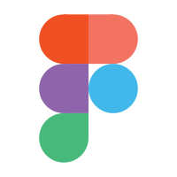

Highly skilled with the following
software
User Experience Designer
Hi, I'm Jeroen Jansen. A passionate User Experience Designer from the Netherlands, based in Surabaya, Indonesia

- 
Hi, I'm Jeroen Jansen. A passionate User Experience Designer from the Netherlands, based in Surabaya, Indonesia

I help make systems simple and easy to understand. I thrive to create the best experience for every scenario.
Between my education and my work experience I have acquired the skills and knowledge necessary to make your project a success.
I love UX because it always requires something different. Learning about a target audience, what works, and applying that knowledge. The repeated iterations to improve products is a never-ending cycle with always a bigger goal on the horizon. What appeals to me in this is that a perfect product or design doesn’t exist, but a perfect fit for the right target audience does. Tailoring products and experiences for the right fit is something that I am passionate about.


Mixbook is an American company that mainly sells photo books but they also sell cards, calendars, and home decor items. Their main target audience is 35+ year old women in the USA that are of middle-class income.
The issue is that the users are experiencing little to no guidance in the process of picking the right options when creating a photo book. Because of this, the users don't fully understand what the choices entail and thus are unable to finish their product with confidence. The goal is to guide the users through the options and the check-out process of picking the right photobook and its options.
Mixbook does a lot of research regularly, which gave me resources to work with. My focus was to create research that added to this already existing information rather than replace it and to make it relevant to the specific scope of the task.
I started out with a heuristic evaluation of the shopping experience. This would also serve as a baseline for my next research item, the competitor analysis. With my competitor analysis, I researched ten direct and indirect competitors. The results show that improving the product details page and adding a gift store page are the most valuable improvements to the shopping experience.
I refined the research by creating a customer journey map and “how might we” questions to fall back on during the design phase.
To summarize the research, I created the concept: Effortlessly uncomplicated. This concept focuses on making the choices and options easy to understand and easy to use. It focusses on an understandable flow above all else.
In the initial wireframing phase I made many different versions that, with great collaborative effort, were reduced to three lo-fi wireframes. This caused the creation of the hi-fi wireframes to be streamlined. The final version is shown below, which wants its content shown above the fold in its entirety to preserve the cohesion of the shopping experience.
The current page was too text-heavy. It had some great features already like the clarity of pricing but needed to be more visually oriented. The main task was to simplify the elements to make it easier for the scannability of the user.
The user test would be conducted on the products detail page, as it requires the most amount of testing at this stage. Delivering a user test with its recommendations was the final step of my project. The desirable information was aimed at the success of the simplified product details page. The most important findings were about pricing transparency and how the simplicity of the design did seem favorable. The results taught me a lot and helped me create relevant recommendations.
This was a great project to learn the creative bounds within an existing style, what is possible while keeping the brand identity intact. It was also one of the most pleasant working experiences I have had in the field in terms of communication and colleagues. I am definitely looking forward to having more experiences like the one I had with Mixbook.
ROC Mondriaan is a big chain of educational facilities in the Netherlands that has thousands of employees that offers over 200 different branches of education. Mandates, programs, and systems are implemented from the central part of the organization, but each location has its own infrastructure; every location has its own IT department, a full array of teachers, a board of members, etc.
The issue is that the employees of ROC Mondriaan experience frequent technical issues. These issues range from beamers that don’t work, malfunctioning smartboards, inaccessible accounts, printers that don’t print, and more. These issues have no consistent way of being resolved without external aid, which has a waiting list. The goal is to solve these technical issues efficiently with as little external help as possible.

For this project, I received a general direction and some basic information. This information was enough to create a direction for the interviews and research on location. This proved to be a strong foundation for the entire project. The main goal of the interviews was to decipher the exact nature of the challenges experienced by my target audience, teachers and other staff members of ROC. Technical in nature was still quite a broad stroke, so defining the specifics was the basis of this research.
The first iteration of interviews was to test the water, ask more broad questions, and the next round would have more specifics by going in-depth based on the earlier results. The main takeaways from the interviews were: most problems would be fixable with a reboot of the system in question, the effort of ROC Mondriaan to digitalize everything, application management wants problems reported through official channels and not WhatsApp groups, and teachers want the fastest, not necessarily the best solution.
These results were processed into user needs (following the MoSCoW priority list, as seen in the image above), personas and requirements. The most important conclusion of the research was to create something that would appease the direct approach from the teachers with the official register that Application Management wants while solving problems.

One tap, the name of the concept. It aims to fix the simplest of problems with as much simplicity as the situation allows. It incorporates help from others, automated fixes, and accessibility. This keeps the solution on brand by sticking to the core values of ROC Mondriaan(“skillful, innovative and involved”). It accomplishes this by opening the communication channel between colleagues, to bring people in the organization together. The concept is visualized with a concrete scenario, a flowchart, and a storyboard as seen above.
The research showed a need for 2 functions: a quick solution and a problem report function that uses official channels. These functions rely on the NFC chip in the company phone.
A quick solution to fix problems that would be fixed routinely by application management. This is the core focus of the app. The other key feature is the ability to report problems with pictures or videos showcasing said problem. This way, when a teacher refers to a problem to application management through whatsapp they can see the problem, it’s details, have it organized and have it registered in the official system. This is the foundation of the first mockup wireframes. After iterating on these basic mockup wireframes the lo-fi designs would be created to perform user tests with.
The user tests were met with mixed feedback about the simplicity of use, but is a bit too limiting in others. One interesting finding was that most users chose to use the menu to navigate towards the scan or problem report features rather than browse the homepage. This caused the homepage to get a different look, and to add more items to the menu. The feedback was processed into a better-functioning hi-fi prototype as seen below.

This hi-fi design is the deliverable in its prototyping form to propose to ROC Mondriaan as the desired solution. This was given in the form of a presentation, to be developed internally. The research, findings and visualizations were received with an extra amount of positivity. Information that could also be used for internal meetings within ROC Mondriaan between staff members and possibly for other internal projects.
It was very helpful, eventful, and productive to get a very high amount of cooperation. This was internally given by application management, ROC Mondriaan leadership, and the teachers involved. The free access to information and other employees made the research phase very productive. It also made it possible to deliver elaborate research that could serve more purposes than just t he specific use case of this project.
Basalt is a rehabilitation clinic that works to support and guide people that have an acquired brain injury. As there is no cure yet, dealing with the aftereffects of having an acquired brain injury is their focus. The Hersenstichting(brain foundation) is a foundation that created an application that supports and aids people with an acquired brain injury. The goal of this app is to offer support and answers to potential questions or concerns.
The challenge is that not many people in the target audience use the current application, and the foundation doesn’t know why. Basalt has been asked to review and improve the application so that it becomes a useful application for the target audience that they want to use. And I fulfilled this task for Basalt.

Analyzing the core values (expertly, clarifying, binding) of the client gave me a first step in the directionin how I should shape the research. The main goals for the research were to learn more about the target audience, what kind of struggles and challenges they have to overcome and only then target the application itself. See what they expect of an application, how it could and would help them, and what they think of it in its current state.
It being a sensitive target audience, keeping interviews to the point and brief was important, as one of the key findings was the inability to focus for a prolonged period of time, frequent headaches and difficulty concentrating. These would play an important role in the designs and systems created later. Another key piece of information was the desire for anonymity, because of the sensitive nature of their circumstances.
The desire of the target audience for the application was information, community and getting their concerns alleviated through both these methods. This summarizes the challenge with the current application as its design doesn’t support the challenges the target audience faces, and doesn’t have the content that is desired by the target audience. Knowing that the company behind this application does have the expertise, knowledge and personnel available to create something the target audience truly wants helps. Every interviewed person had heard of the app and even installed it in the years past, because the desire for this app was and is there.
The concept would be branded communal knowledge. With the desire for an app being there, and the shortcomings displayed by the target audience, there was a clear direction. A community focussed app that houses more knowledge to alleviate the concerns is the focus. Increasing the feeling of solidarity among the target audience by talking about the daily challenges to overcome. A list of what should be included in the product itself was formulated with the MoSCoW method for easy prioritization.
Studies and research show that teal is the best color to deal with headaches and screens. And having the ability to switch to high contrast modes, dark modes and other accessibility options are of vital importance to the success of the application, regardless of content. The accessibility display examples shown below are only on the home page in both a state of being logged in and browsing anonymously.
After the initial design for accessibility was set up the user tests could be performed on the content. It was important to first have the accessibility figured out to perform the tests because of the characteristics and sensitivity of this particular demographic. The content tests were performed to see how much information would be desired, and which community elements would be important and what the rankings would be of different elements. This showed a high desire for information as elaborate as possible with the option to talk about these informative topics with other people in an environment only similar people could react in. A safe space. This means the anonymous browsing is good for information, but completely locked out of the community aspect.
The app design and the accompanying research and test results were the deliverables. By explaining the shortcomings based on the desires of the target audience and how to fit these into the new app design as a template, there would be space for adding additional content at any time. The created content was one that would fit the narrative that was desired, and could be added by the vast database of knowledge and the community surrounding Breinstaat.
Learning to work with a sensitive target audience far removed from what I would encounter in daily life helps broaden your view of design significantly. It was a valuable experience and one I shall remember well for its alternative approach, methodology and importance. It makes me appreciate even more how designing for others can be a rewarding experience.


You can also find me on social media here